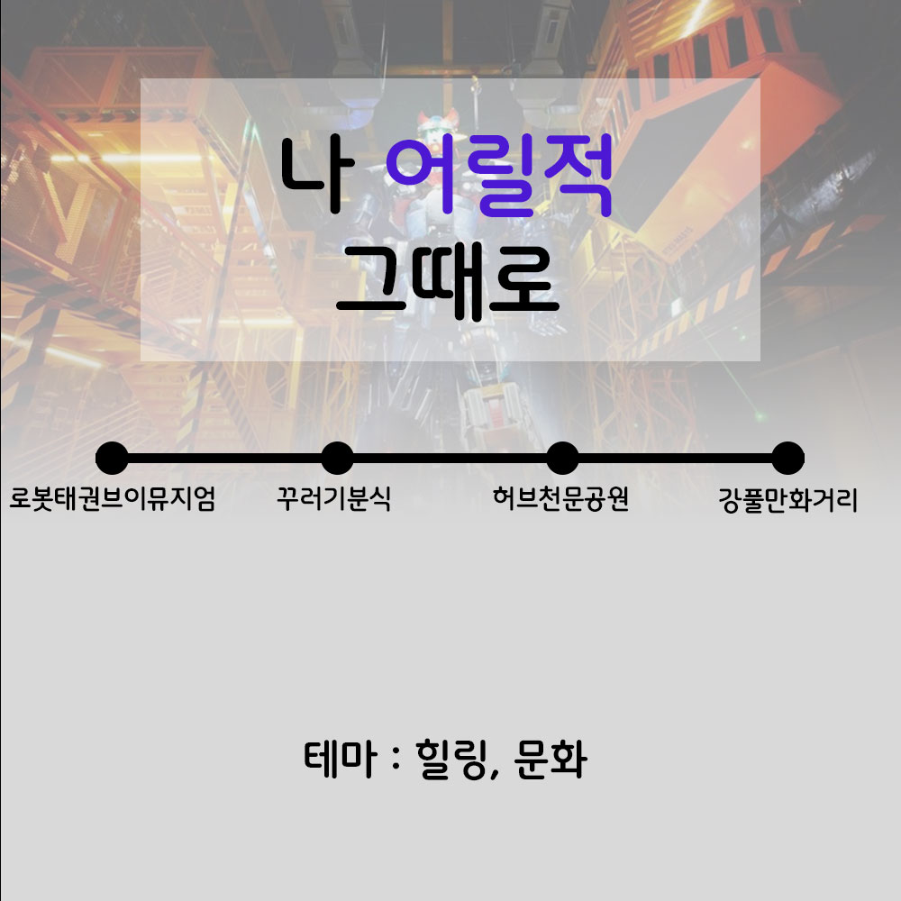

강남
과거와 현재가 만나는 곳 강남
[필경재, 한강개발기념비, 삼성 배수지공원, 압구정]
어릴적
나 어릴적 그때로
[로봇태권브이뮤지엄, 꾸러기분식, 허브천문공원, 강풀만화거리]
서울
대한제국 위에 새겨진 서울
[구)서울특별시청사, 덕수궁 중명전, 고종의 길, 손탁호텔 터, 배재학당]
동묘을지로
동묘-을지로의 뉴트로 바이브
[신설동역, 동묘 구제시장, 광장시장, 옛날다방, 을지로노가리골목]
서대문
서대문에서 외치는 대한독립만세
[독립문, 서재필동상, 서대문독립민주축제, 서대문형무소역사관]
서울 강북
서울 강북 구석구석 로컬여행
[북한산, 화계사, 숭인시장 제일분식, 나폴레옹 과자점]
서울 광진
서울 광진에서 강과 산 즐기며 힐링여행
[뚝섬유원지, 서울생각마루, 광나루, 아차산성, 아차산]
서울 도봉
서울 도봉에서 역사 문화탐방
[도봉서원, 도봉산, 김수영문학관, 전형필가옥]
서울
서울에서 만나는 백제인의 기상
[풍납동 토성, 몽촌토성, 한성백제문화제, 잠실 한강공원]
성북구
성북구, 한국 근현대의 발자취를 찾아서
[성북동, 권진규 아틀리에, 돈암시장, 최순우 가옥]
서울 관악
여유 한스푼, 서울 관악 나들이
[관악산, 관악산 호수공원, 구 벨기에 영사관]
종로
옛 정취 가득한 종로 골목여행
[종묘, 광장시장, 종로 시계골목, 탑골공원, 청진동 해장국]
이색박물관
우리가 기억할 역사 한조각, 서울 이색박문관 여행
[안중근의사기념관, 고려삼계탕, 백범김구기념관, 도산안창호기념관]
이태원
이태원이 품은 공존의 깊이
[이태원거리, 앤틱가구거리, 서울중앙성원, 해방촌]
조선왕조
조선왕조, 그들의 신화
[국립고궁박물관, 경복궁, 삼청동, 종묘]
서울 동작
한강 전투 중심지에서 휴식처로, 서울 동작의 어제와 오늘
[보라매공원, 보라매공원 에어파크, 노량진수산시장, 한강철교]
서울 여행 코스 추천
나 어릴적 그때로
작성일 : 2023-04-15
"서울에 구석구석 숨은 추억 따라 시간여행을 떠나는 여행"

코스 정리 (로봇태권브이뮤지엄 > 꾸러기분식 > 허브천문공원 > 강풀만화거리)
"날아라 날아~ 태권브이" 노래가 절로나는 [태권브이 뮤지엄]
로봇태권브이 라이브 뮤지엄인 브이센터는 2012년부터 공사가 시작되어 2015년에 정식 개관한 국내 최초의 로봇 박물관이다. 어린이, 청소년들의 체험공간으로 사랑받고 있다.
30년째 자리를 지키고 있는 즉석떡볶이집 [꾸러기분식]
30년 역사의 즉석떡볶이집으로, 다양한 맛집 프로그램에도 소개되었던 집입니다. 옛날의 감성을 지키면서 여전히 그 자리에서 추억을 팔고 있는 곳이다.
허브향이 가득 퍼지는 길따라 산책하기 좋은 곳 [허브천문공원]
낮에는 상쾌한 허브의 향기가 가득하고, 저녁에는 반짝반짝 켜지는 조명과 전망대의 별들이 은은한 허브천문공원이다. 허브원과 온실, 관천대, 전망대, 산책로 등이 조성되어 있다
주민들의 아이디어로 꾸며진 문화거리 [강풀 만화거리]
만화와 영화로 우리에게 친숙한 웹툰작가 강풀의 작품들을 거리 곳곳에 꾸며놓은 아기자기한 거리 '강풀 만화거리'이다. 골목 골목마다 만화와 관련된 것이 많아 스토리를 따라가는 재미를 느낄 수 있다.